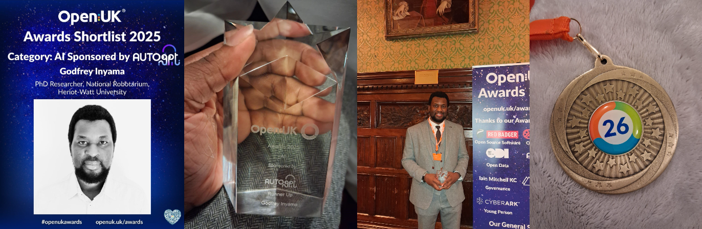

About Me
I am Godfrey Inyama, a researcher and engineer working at the intersection of
artificial intelligence, explainable models, robotics, and open technology. My work focuses
on responsible AI, human–robot collaboration with Mixed-Initiative Dialogue, and open source AI research.
OpenUK Honours & Awards

🏅 OpenUK New Year Honour 2026
Honour
Issued by: OpenUK · January 2026
Associated with: Heriot-Watt University
Recognised in the 6th annual OpenUK New Year Honours List for contributions to
Open Technology and supporting the UK’s leadership in open source software, hardware,
and open data.
Personal Remark:
View post
🔗
OpenUK Honours List (Godfrey Inyama)
🥈 Runner-Up – AI Category (6th OpenUK Awards)
Award
Issued by: OpenUK Awards · December 2025
Shortlisted and awarded Runner-Up in the Artificial Intelligence category for impactful
contributions to open and responsible AI.
Academic Journey
-
PhD in Artificial Intelligence (In Progress) – Heriot-Watt University
Research Area: AI for Human-Robot Collaboration
-
Master of Philosophy (MPhil), Computing – University of Dundee (Jan 2023 – Jul 2025)
Thesis: Exploiting Illocutionary Forces in Dialogue Structures for Enhancing Authorship Identification
-
Master of Science (MSc), Robotics – Heriot-Watt University (Sep 2021 – Sep 2022)
Dissertation: Cloud Based Robotics Platform for Outreach Activities
-
Postgraduate Certificate, Machine Learning – University of Stirling (Jun 2022 – Sep 2022)
-
Bachelor of Engineering (First Class Honours) – Electrical & Electronics Engineering,
Caritas University (Sep 2012 – Sep 2017)
Key Awards & Recognition
-
Tech Machine Learning Personality of the Year – Nigeria Technology Awards (NiTA), 2024
🔗
Guardian Nigeria coverage
-
SPDC LiveWIRE Regional Innovator – Shell Petroleum Development Company, 2019
-
Best Graduating Student – Caritas University (Electrical & Electronics Engineering), 2018
Academic & Research Contributions